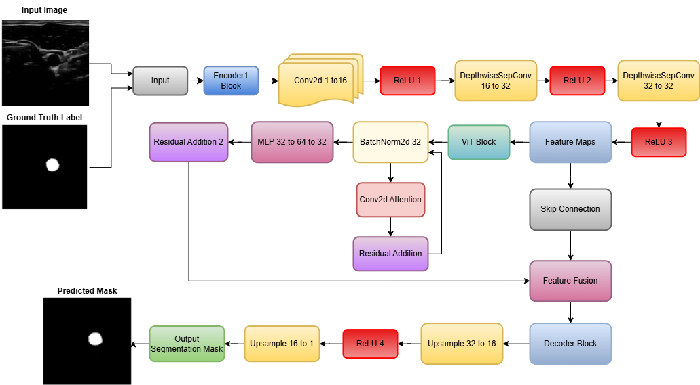

About Me
Biomedical Engineer | MASc Candidate @ University of Guelph | Specializing in AI-Driven Medical Imaging and Biosignal Analytics
Education
- MASc Biomedical Engineering + AI , University of Guelph, 2024–2026
- Bachelor of Engineering (Biomedical), University of Guelph, 2020–2024
Experience
- Researcher - Medical Imaging & AI, Guelph Imaging AI Lab
- Machine Learning Associate, Vector Institute (Fastlane MLA Program)
- Research Assistant, Ukwatta Lab
Projects
FusionViTNet
Hybrid CNN and ViT model for carotid artery segmentation in ultrasound images.
GitHub RepoLung Nodule Segmentation
AI-based system for early lung nodule detection from CT images.
GitHub RepoDiabetic Foot Ulcer Monitoring


Thermal and pressure-sensing sock integrated with a mobile app to monitor diabetic foot ulcers. Includes data acquisition, model-based optimization, and a real-time Android interface.
GitHub Repo Read the PaperExtracurriculars
Active member of PDC-PEO, Women in Engineering, and various student engineering societies.
Contact
Email: zinahghulam@gmail.com
LinkedIn: linkedin.com/in/zinah-ghulam